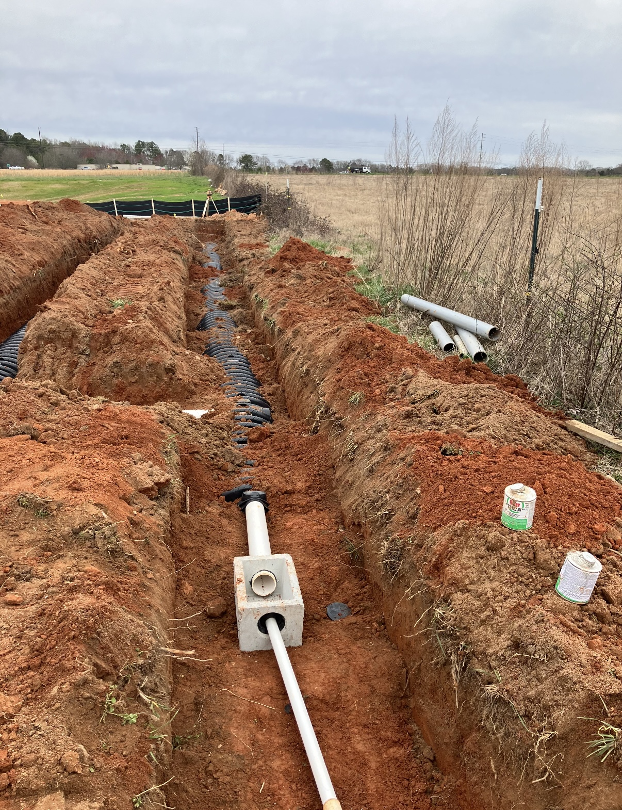

Septic Services
Drain Field Installation & Replacement
Failed leach field? Building new? ALLCON installs and replaces drain fields across North Georgia and the Athens area — Gainesville, Athens, Winterville, Watkinsville, Bishop, Bogart, and beyond. Chamber, drip, and Eljen systems matched to your soil. Call (678) 410-0310 for a free estimate.

What We Do
Drain Field Services
- New drain field / leach field installation
- Full drain field replacement for failed fields
- Field line repair — crushed lines, roots, distribution boxes
- Chamber, drip, and Eljen system installation
- Soil evaluation & perc test coordination
- Excavation, backfill, and final grading included
How It Works
Drain Fields in Georgia Soil
Your drain field — also called a leach field or field lines — is where the real work of a septic system happens. Wastewater leaves the tank and disperses through perforated lines or chambers into the soil, which filters it naturally. When the field fails, the whole system fails, no matter how healthy the tank is.
Georgia soil makes drain field design matter more than most places. The red clay common around Gainesville and the foothills drains slowly and demands proper field sizing; the soils around Athens, Watkinsville, and Oconee County vary lot to lot. That's why every job starts with understanding your soil — we coordinate perc testing, work with the county health department, and match the system type to the ground: conventional chamber fields where the soil percs well, drip or Eljen systems where it doesn't.
Because ALLCON is a grading company as much as a septic company, the excavation, trenching, backfill, and final grade are all done in-house — no subcontractors, no finger-pointing, and a yard that's left clean and properly sloped when we're done.
Service Area
North Georgia & the Athens Area
We install and replace drain fields throughout our North Georgia home territory — Gainesville, Dawsonville, Cumming, Buford, Dahlonega, Cleveland, Canton, Ball Ground, and Jasper — and we regularly take drain field and leach field jobs in the Athens and Oconee County area, including Athens, Winterville, Watkinsville, Bishop, Bogart, Lexington, and Arnoldsville.
With 35+ years of septic and grading experience and 239+ Google reviews, ALLCON is one of the most trusted names in the region. Call Ralph at (678) 410-0310 and let's look at your project.
Drain Field Failing?
Call Ralph for an honest evaluation and a free estimate.
Get a Free Quote (678) 410-0310